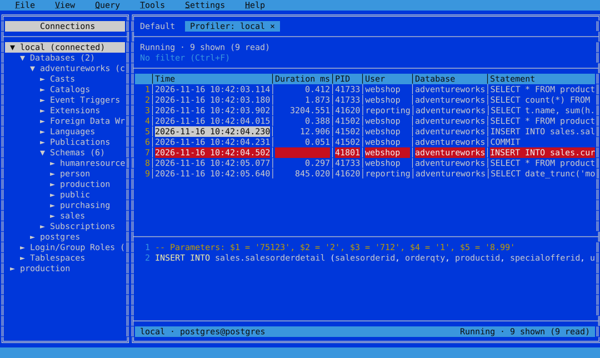
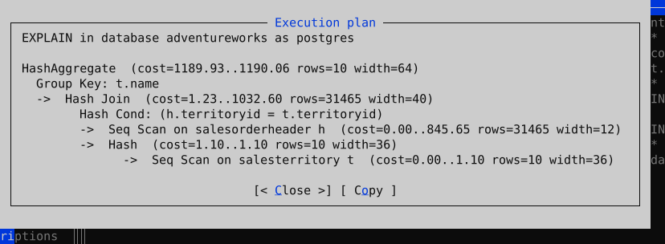
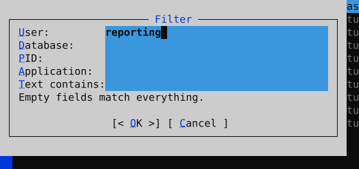

SQL profiler
A live statement trace of the whole cluster, read from the server log: every completed statement with duration, PID, role, database, bind parameters and errors.

What it is for
The SQL as the server received it (also what an ORM generates), with its duration, its bind parameters
(extended query protocol) and its error. Unlike the dashboard, which samples
pg_stat_activity, it shows every statement.
How it works — and what that means for you
ALTER SYSTEM SET log_min_duration_statement = 0, a machine-readable format added tolog_destination, thenpg_reload_conf().- Once a second:
pg_current_logfile(),pg_stat_file()andpg_read_binary_file()for the new bytes — over the tab's own session, so no file-system access to the host is needed. - On stop the settings are restored.
| Requirement | |
|---|---|
logging_collector = on | If it is off, Start only reports it; pgtc never restarts a server. |
| Privileges | Superuser, or pg_read_server_files plus the right to run ALTER SYSTEM for the two settings and pg_reload_conf(). Nothing is checked in advance: Start or the first read shows the server's error. A Start whose ALTER SYSTEM statements all fail changed nothing and leaves nothing to restore. Managed services usually grant neither. |
| Scope | Both settings are cluster-wide: all databases and roles are logged while it runs. See Filtering. |
log_min_duration_statement = 0 adds a log write to every statement and makes the log grow fast.
Opening the profiler
Alt+P (also Ctrl+P) on a connected server or one of its databases; ; the context menu.
- One profiler tab per server. Opened from a database row, the filter is preset to that database.
- Its own session on the maintenance database; entries with that session's PID are dropped.
Start
F5 reads logging_collector, log_destination and
log_min_duration_statement with their sourcefile from pg_settings. If
something has to change, pgtc lists it and asks:

| Setting | Set to |
|---|---|
log_min_duration_statement | 0 |
log_destination | The current value plus jsonlog (15+) or csvlog (older). If one of them is already written, nothing is added and that format is read. |
- One
ALTER SYSTEM SETper setting, thenpg_reload_conf(); no restart. - Reading starts at the end of the current log file.
- If nothing needs to change, there is no question.
Reading the list
| Column | |
|---|---|
| Time | Log timestamp: when the statement completed, server clock. |
| Duration ms | The record's duration:; empty for an error. |
| Detail | For an execute: the bind parameters from the record's DETAIL. For an error: the message. |
| Kind | statement — simple query protocol; execute — Execute of the extended protocol; error. Parse and Bind are not listed. |
- New entries are appended; the cursor follows them only while it is on the last row.
- An error is a record of severity
ERROR/FATAL/PANIC, or with a SQLSTATE outside classes 00, 01, 02. Its Statement is the SQL that failed. - Header: 9 shown (9 read) — parsed from the log / passing the filter.
- The newest 100,000 entries are kept.
The statement pane
The selected statement in full. Bind parameters (-- Parameters: $1 = '75123', …) and the error
(-- ERROR: …) are put above it as SQL comments, so a copy is still a valid script.
| Key | |
|---|---|
| Alt+Down / Alt+Up | Into the pane / back. |
| Ctrl+R | Hide / show the pane. |
| Alt+Shift+Up / Alt+Shift+Down | Smaller / larger (or drag its upper line). |
| Ctrl+E | The statement in a new query tab on the database it ran in. |
The whole entry
Execution plan
Ctrl+Q (context menu ): EXPLAIN of the selected
entry's statement — never ANALYZE, so nothing is executed.

- Planned on a session of its own in the entry's database, with the saved connection's role, in a
READ ONLYtransaction; the session ends with the plan. An entry without a database has no plan. - It is the plan this session gets now, not the logged session's: role,
search_pathand planner settings (work_mem,enable_*, …) are not in the log. A statement that relied on asearch_pathfails with relation … does not exist. - Prepared statements: the logged parameter values are bound, so the plan is the custom plan for them.
Without values in the log (
log_parameter_max_length = 0, error entries), or with values the server may have cut (log_parameter_max_lengthnot-1, value ending in...):EXPLAIN (GENERIC_PLAN)on PostgreSQL 16+, a message on older servers. - What
EXPLAINdoes not take (utility statements, several statements in one entry) shows the server's error in the window. - Copy takes the plan without the window's line wrapping. For
EXPLAIN (ANALYZE, …): Ctrl+E, then write it in the query tab.
Filtering
Ctrl+F:

- Empty fields match everything; filled ones must all match. Text contains is case-insensitive.
- The filter is client-side, on the entries already read: the server logs everything regardless, and clearing the filter shows everything read again.
Pause and clear
| Key | |
|---|---|
| Ctrl+P | Pause: reading stops, the server keeps logging; resume continues at the same file offset. |
| Ctrl+L | Clear the list. |
Stop
F5 again. A value that came from postgresql.auto.conf before Start is set back with
ALTER SYSTEM SET; any other is removed with ALTER SYSTEM RESET; then
pg_reload_conf(). The entries stay in the list. A value the session saw from ALTER ROLE /
ALTER DATABASE … SET is not the server's: it is never written back with ALTER SYSTEM, and
Start sets log_min_duration_statement = 0 cluster-wide even when the session already has 0.
The same happens when the tab is closed, the server is disconnected, or pgtc quits (it waits: Restoring logging settings…) — also right after Yes, before the server has answered.
If pgtc could not put the settings back
After a kill, a crash or a lost session the changed values stay in postgresql.auto.conf.
- When pgtc changes the settings it records the server, the time and the undo statements in
profiler_restore.toml(no password). - At the next connect of that server it reads the two settings; if they still have the profiler's values it asks whether to put them back.
| Answer | |
|---|---|
| Yes | Runs the ALTER SYSTEM statements and pg_reload_conf(). |
| Not now | Asks again at the next connect. |
| Forget | Drops the record; the settings stay. |
If somebody changed the settings in the meantime, the record is dropped silently. If restoring fails, the
record stays. By hand (if the two settings were not set with ALTER SYSTEM before):
ALTER SYSTEM RESET log_min_duration_statement;
ALTER SYSTEM RESET log_destination;
SELECT pg_reload_conf();The tab status row
The profiler's own session (local · postgres@postgres) and the state: Stopped,
Running or Paused, with the entries shown and read.
Limits
- Statements inside functions are not listed: the log has one record for the top-level statement.
- The statement / execute kinds are recognised by the English words of the log message. With
another
lc_messagesevery line with a duration is still shown, with the kind as the server wrote it. Errors are recognised by SQLSTATE in any language. - At most 1 MB of log is read per second; beyond that the list falls behind.
- No export to a file; copy with Ctrl+A, Ctrl+C.
All profiler keys
| Key | |
|---|---|
| F5 | Start / stop. |
| Ctrl+P | Pause / resume. |
| Ctrl+F | Filter. |
| Ctrl+L | Clear the list. |
| Enter | The whole entry. |
| Ctrl+Q | Execution plan (EXPLAIN) of the statement. |
| Ctrl+E | The statement in a new query tab. |
| Ctrl+R | Statement pane. |
| Alt+Down / Alt+Up | Statement pane / list. |
| Ctrl+C, Ctrl+A | Copy; select all. |